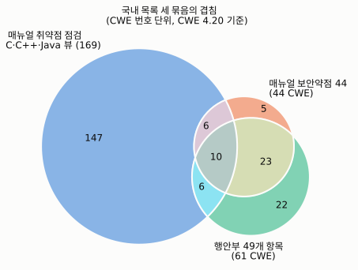
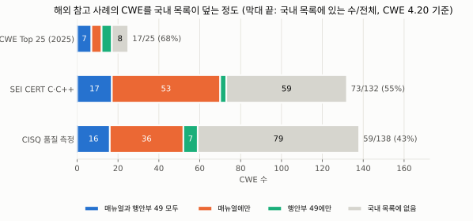

국방 SW 보안약점 기준, 얼마나 겹치나
방사청 매뉴얼 신뢰성 시험(취약점 점검 CWE-658·659·660, 보안약점 점검 44개)과 행안부 개발보안 49개 항목을 CWE 번호로 맞춰 겹침을 셉니다. 해외 목록(CWE Top 25, SEI CERT C·C++, CISQ 품질 측정)은 참고 사례로 두고, 국내 목록이 얼마나 덮는지만 봅니다. 내 CWE 목록을 넣어 같은 방식으로 비교할 수도 있습니다.
한눈에 보기
- 매뉴얼 보안약점 44 ↔ 행안부 49가 가장 크게 겹칩니다. 공통 CWE 33개(Jaccard 0.46). 문서상 신뢰성 시험과 보안성 시험을 모두 받는 전장관리정보체계는 이 33개를 두 시험에서 각각 점검합니다.
- 매뉴얼 언어별 뷰와 행안부 49는 거의 겹치지 않습니다. C 뷰와 공통 10개(Jaccard 0.06). 두 시험은 서로 다른 약점을 봅니다.
- 국내 다섯 목록 모두에 들어 있는 CWE는 세 개입니다. CWE-476(NULL Pointer Dereference), CWE-495, CWE-496.
- 해외 참고 사례와 견주면 국내 목록은 CWE Top 25의 17개(68%)를 덮습니다. 빠진 8개는 접근 제어·인가(284·639·862·863), 입력 검증(20), 명령 주입(77), 정보 노출(200), 자원 소비(770)입니다.
무엇을 비교했나
국방 SW가 받는 시험·검증 가운데 소스코드 보안약점을 CWE 목록으로 요구하고, 그 목록을 공개 자료로 확인할 수 있는 것만 정량 비교했습니다.
| 시험·제도 | 요구 목록 | 이 페이지에서 |
|---|---|---|
| 방사청 매뉴얼 신뢰성 시험 · 취약점 점검 | CWE-658(C)·659(C++)·660(Java) | 국내 비교 ✓ |
| 방사청 매뉴얼 신뢰성 시험 · 보안약점 점검 | 보안약점 점검 목록 44개(현행 제2024-6호 부록 7) | 국내 비교 ✓ |
| 보안성 시험(전장관리정보체계), 상호운용성 정보보호 시험(최민관, 2019), 국가 정보보안 기본지침 | 행안부 구현단계 보안약점 49개 | 국내 비교 ✓ (행안부 49로 대표) |
| 해외 참고 사례 | CWE Top 25(2025), SEI CERT C·C++, CISQ 품질 측정 | 참고 ✓ (국내 목록이 덮는 비율만) |
| 코딩규칙 검증(MISRA 등) | CWE 목록이 아님 | 제외 |
| 보안성 검증(최민관, 2019), 보안측정, K-RMF, 품질검증 체크리스트 | 세부 목록 비공개·미확정 | 제외 |
| 사업별 확정 점검 목록 | 도구·협의로 사업마다 정해지며 비공개 | 제외(문서상 최대 범위만 비교) |
목록별 CWE 수
국내 목록마다 요구하는 CWE 번호 개수와, 그 가운데 다른 국내 목록에는 없는 고유 항목 수
얼마나 겹치나 (Jaccard 유사도)
교집합 ÷ 합집합. 1이면 두 목록이 같고 0이면 전혀 겹치지 않습니다. 칸을 누르면 공통 CWE가 아래에 나옵니다.
어떤 성격의 약점을 요구하나
MITRE CWE-1400 뷰는 모든 CWE를 메모리 안전, 주입, 접근 제어 같은 22개 범주 중 정확히 하나에 넣습니다. 칸의 숫자는 그 목록이 요구하는 CWE 수이고, 색이 진할수록 그 목록 안에서 비중이 큽니다. 칸을 누르면 해당 CWE가 아래에 나옵니다.
해외 참고 사례
해외 목록은 국내 시험 기준이 아니므로 겹침 분석에 넣지 않고, 각 목록이 어디에 쓰이는지와 그 CWE를 국내 목록이 얼마나 덮는지만 봅니다. 막대를 누르면 국내 목록에 없는 CWE가 아래에 나옵니다.
| 목록 | 만든 곳·방식 | 주로 쓰이는 곳 | 참고할 때 주의 |
|---|---|---|---|
| CWE Top 25 (2025) | MITRE(CISA 후원). 2024. 6. 1.~2025. 6. 1. 공개 CVE 39,080건의 CWE 빈도와 CVSS 심각도로 순위를 매김 | 개발·보안 시험의 우선순위 점검표. 미국 CISA가 취약점 관리와 보안 시험에 반영하도록 권고(2024판) | 공개 CVE 기반이라 웹·일반 IT 제품 비중이 큼. 무기체계처럼 공개되지 않는 SW는 반영되지 않음 |
| SEI CERT C·C++ | 카네기멜런대 SEI의 코딩 표준. MITRE 뷰 1154(C)·868(C++)이 규칙이 다루는 CWE를 모음 | C·C++ 코딩 규칙 점검. 상용 정적 분석 도구가 규칙 세트로 제공하고, 항공 등 안전 중요 SW에서 MISRA와 함께 코딩 표준 후보로 거론됨(업체 자료) | MITRE가 두 뷰를 취약점 매핑에 쓰지 말라고 표시함. C++ 뷰는 2016판에서 갱신이 멈춤 |
| CISQ 품질 측정 | CISQ가 만들고 ISO/IEC 5055:2021로 채택. 소스코드의 CWE 결함을 보안·신뢰성·성능 효율·유지보수성 네 측면으로 셈 | 소스코드 품질을 수치로 재는 기준. CISQ는 계약·인수 기준으로 쓸 수 있다고 소개함 | 정부 조달에서 실제로 채택한 사례는 확인하지 못함. 표준 본문은 유료 |
CWE 버전 간 비교
MITRE는 CWE를 버전마다 고칩니다. 매뉴얼 시험확인서 예시 양식이 적은 CWE 4.10과 최신 버전을 같은 방법으로 계산해 나란히 놓았습니다. 국내 목록 번호는 그대로이고, 언어별 뷰(658·659·660)의 구성이 바뀌면서 결과가 달라집니다.
목록별로 늘거나 빠진 CWE
MITRE 아카이브의 32개 버전에서 언어별 뷰 크기 훑어보기
매뉴얼 이력(2016년 CWE-660 추가, 2022년 보안약점 목록 추가)을 덮도록 CWE 2.9부터 최신까지 언어별 뷰만 세었습니다(version_scan.csv). 전체 분석은 위에서 고를 수 있는 버전만 합니다.
내 CWE 목록 비교
사업에서 실제로 점검하는 CWE 번호를 붙여 넣으면, 국내 목록과 해외 참고 사례 각각과 얼마나 겹치는지 바로 계산합니다.
번호는 쉼표·공백·줄바꿈으로 구분하고, CWE-는 붙여도 되고 빼도 됩니다.
| 비교 목록 | 목록 크기 | 공통 | 내 목록 중 비율 | Jaccard | 목록에만 있음 |
|---|
CWE 파일 불러오기
MITRE CWE 아카이브(cwe.mitre.org/data/archive.html)에서 받은 버전 파일(cwec_vX.Y.xml.zip 또는 압축을 푼 .xml)을 불러오면,
그 버전으로 이 페이지의 분석을 모두 다시 계산합니다. 불러온 버전은 위 'CWE 버전' 상자와 버전 간 비교 표에 추가됩니다.
그림
보고서에 넣을 정적 그림(SVG)으로, CWE 4.20 기준입니다. 위에서 다른 버전을 골라도 그림은 바뀌지 않습니다. 분석 스크립트로 다시 만들 수 있습니다.




CWE별로 찾아보기
어느 CWE가 어느 목록에 들어 있는지 표로 봅니다. ● 표시가 그 목록에 포함된다는 뜻이고, 오른쪽 회색 열은 해외 참고 사례입니다.
분석 범위와 한계
아래 다섯 가지 이유로 이 페이지의 숫자는 국방 SW 시험 부담 전체가 아니라 공개 목록 사이의 관계로 읽어야 합니다.
- 공개 자료만 비교함. 공개 자료로 항목을 확인할 수 있는 목록만 넣었습니다. 매뉴얼 CWE 뷰와 보안약점 44개, 행안부 49개가 여기에 해당하며, 해외 목록은 참고 사례로만 씁니다. 국방사이버안보훈령 보안측정 기준, 국방기술품질원 체크리스트, 국방부·각 군·업체의 자체 기준, K-RMF 세부 통제는 비공개이거나 원문을 구할 수 없어 뺐습니다. 비공개 기준까지 넣으면 공통 항목은 늘고, 고유 항목은 줄 수 있습니다. 또한 매뉴얼은 도구가 지원하는 CWE를 적용하고 나머지는 사업별 협의로 정하도록 합니다. 그래서 실제 시험의 점검 범위는 사업마다 다르고 공개되지 않으며, 이 페이지는 문서상 최대 범위를 비교한 것입니다.
- 두 국내 목록은 원문에서 확인함. 매뉴얼 보안약점 44개는 방위사업청 홈페이지에 공개된 현행본(제2024-6호, 2024. 12. 26.) 부록 7의 보안약점 점검 목록과 대조했고, CWE 번호와 중복여부 표시만 출처를 밝혀 씁니다(근거는 출처와 이용 조건). 행안부 49개는 한국인터넷진흥원 「소프트웨어 개발보안 가이드」(2021. 12. 29.) 원문의 항목별 참고 CWE로 확인했습니다.
- CWE 버전을 골라 비교함. 매뉴얼 시험확인서 예시 양식이 적은 CWE 4.10과 최신 버전을 함께 실었습니다.
- CWE 번호가 같을 때만 겹친다고 셈. 상위·하위 CWE 관계(예: 119와 787)는 세지 않았습니다. 상위 번호를 주로 쓰는 행안부 목록의 겹침은 작게 나올 수 있습니다.
- 목록이 같아도 시험이 같은 것은 아님. 시험마다 다른 탐지·허용 기준, 오탐 소명 절차, 도구, 적용 대상은 비교하지 않았습니다. 예를 들어 보안성 시험은 전장관리정보체계에만 적용됩니다.
자세한 설명은 분석 범위와 한계 문서와 국방 시험제도 조사 문서에 있습니다.
출처와 이용 조건
이 페이지가 쓰는 자료마다 원 출처의 이용 조건과 이 페이지에서 쓰는 범위입니다. 저장소의 NOTICE.md와 같은 내용입니다(갱신일 2026. 10. 22.).
| 자료 | 원 출처의 이용 조건 | 이 페이지에서 쓰는 범위 | 지키는 방법 |
|---|---|---|---|
| MITRE CWE List(4.10, 4.20)와 2025 CWE Top 25 | CWE Terms of Use. 연구·개발·상업 목적의 무상 이용 허락. 사본마다 MITRE 저작권 표시와 이용허락 문구를 함께 실어야 함 | CWE 번호·이름·뷰·범주, Top 25 순위·점수 | 아래 MITRE 고지 원문 게재. 이 페이지에서 내려받는 CSV 첫 줄에 저작권 표시와 약관 주소 |
| 「소프트웨어 개발보안 가이드」(한국인터넷진흥원, 2021. 12. 29.) | 공공누리 제1유형(출처표시). 게시물에 "한국인터넷진흥원이 창작한 … 공공누리 출처표시 조건에 따라 이용할 수 있습니다"로 표시 | 구현단계 보안약점 49개의 분류·항목명·참고 CWE | 저작물명·저작자·공공누리 유형·원문 주소 표시 |
| 「소프트웨어 보안약점 진단가이드」(한국인터넷진흥원, 2021) | 게시물에서 공공누리 표시를 확인하지 못함 | 교차 확인에만 씀. 내용은 싣지 않음 | 출처 표시 |
| 「무기체계 소프트웨어 개발 및 관리 매뉴얼」(방위사업청 매뉴얼 제2024-6호) | 방위사업청 업무게시판 공개. 공공누리 표시 없음, 사이트에 "All Rights Reserved" | 부록 7 보안약점 점검 목록의 CWE 번호와 중복여부 표시만. 이름은 MITRE 명칭, 원 표의 순서·모양은 옮기지 않음 | 아래 "매뉴얼 이용 근거". 원문 파일은 올리지 않고, 목록 내려받기 링크도 두지 않음 |
| 논문·기사·보고서 | 일반 저작물 | 짧은 인용과 요약 | 참고문헌(APA 7판) |
| JSZip 3.10.1 | MIT 라이선스 | .zip 파일을 열 때만 cdnjs에서 불러옴 | 재배포하지 않음 |
매뉴얼 이용 근거
- 저작권법 제24조의2 제1항(공공저작물의 자유이용). 국가가 업무상 작성하여 공표한 저작물은 허락 없이 이용할 수 있습니다. 방위사업청은 국가기관이고 매뉴얼은 홈페이지에 공표한 문서입니다. 다만 같은 항 단서 제1호(국가안전보장에 관련되는 정보를 포함하는 경우)에 해당하는지는 단정하지 않습니다.
- 보충적으로 제28조(공표된 저작물의 인용). 연구를 위하여 정당한 범위 안에서 인용합니다. 그래서 CWE 번호와 중복여부 표시만 분석 입력으로 쓰고, 목록을 따로 내려받게 하지 않습니다.
- 제37조(출처의 명시). 위 근거로 이용하면서 출처를 명시합니다.
연구팀의 법 조문 해석이며 법률 자문이 아닙니다. 방위사업청이 이용 범위에 이의를 제기하면 해당 자료를 내리고 협의합니다.
MITRE CWE 고지
CWE™ is free to use by any organization or individual for any research, development, and/or commercial purposes, per the CWE Terms of Use. The MITRE Corporation hereby grants you a non-exclusive, royalty-free license to use CWE for research, development, and commercial purposes. Any copy you make for such purposes is authorized on the condition that you reproduce MITRE's copyright designation and this license in any such copy.
Copyright © 2006–2026, The MITRE Corporation. CWE and the CWE logo are trademarks of The MITRE Corporation. https://cwe.mitre.org/about/termsofuse.html
이용 범위에 문제가 있다고 보시면 팀 저장소 이슈로 알려 주세요. 확인하는 동안 해당 자료를 내립니다.
데이터를 읽지 못했습니다. GitHub Pages 주소로 열거나, 저장소 폴더에서 python -m http.server를 실행한 뒤 열어 주세요.